[Tổng hợp] Tính năng nổi bật của webapp HomaCare
Tổng hợp
NỔI BẬT
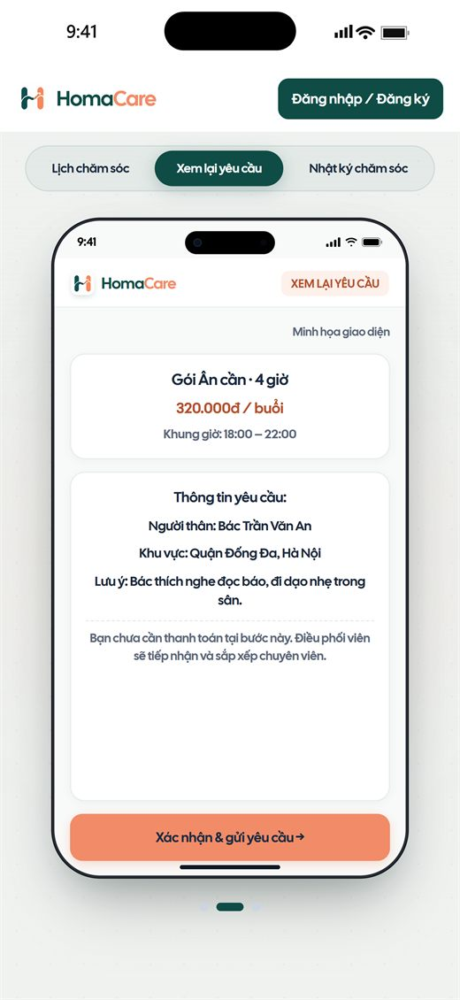
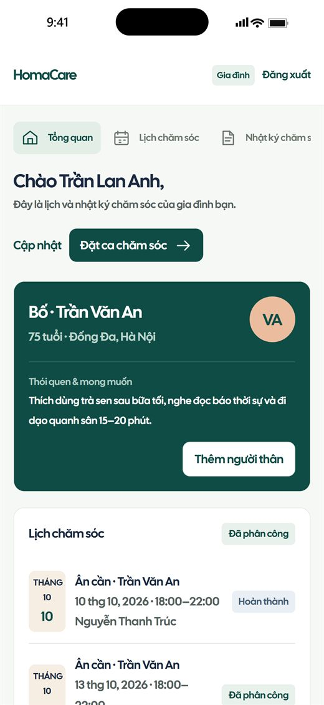
HomaCare là nền tảng kết nối gia đình, chuyên viên chăm sóc và điều phối viên để sắp xếp những buổi đồng hành bên người cao tuổi ngay tại nhà. Bài viết tổng hợp các tính năng cốt lõi theo từng vai trò và những điểm nổi bật trên giao diện điện thoại của phiên bản thử nghiệm hiện tại. Cùng điểm qua hành trình của một ca chăm sóc – từ lúc gia đình gửi yêu cầu đến khi đọc nhật ký sau ca.
Giao diện nổi bật trên trang chủ
1. Trang chủ
1.1 Mở đầu bằng một thông điệp rõ ràng
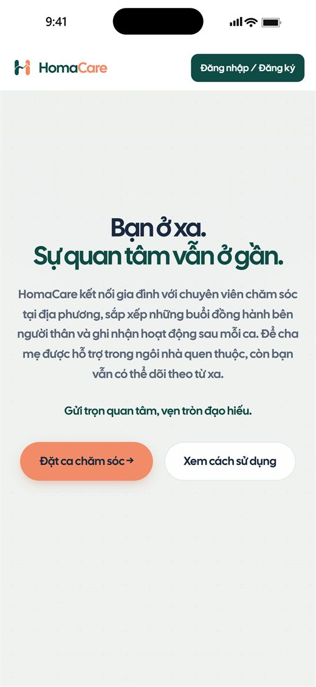
Màn hình đầu và khung mô phỏng giao diện ứng dụng (Hình PL.1, PL.2)
Trên điện thoại, thông điệp “Bạn ở xa. Sự quan tâm vẫn ở gần.” chiếm trọn màn hình đầu. Khi bắt đầu cuộn, khung mô phỏng ứng dụng hiện ra với 3 màn hình Lịch chăm sóc, Xem lại yêu cầu và Nhật ký chăm sóc; vuốt ngang để chuyển màn.
1.2 Cho gia đình biết mình sẽ theo dõi được gì
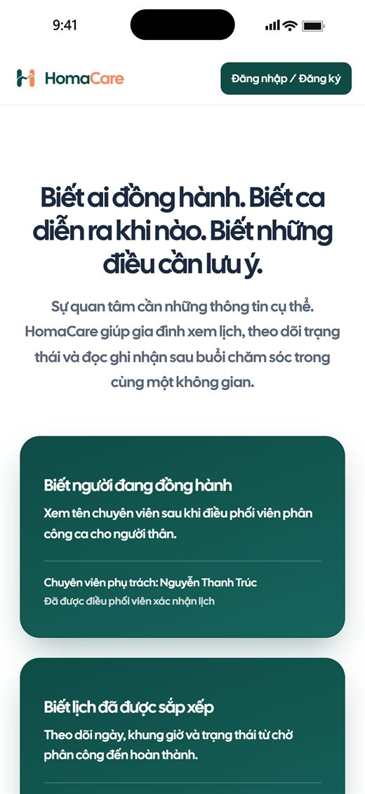
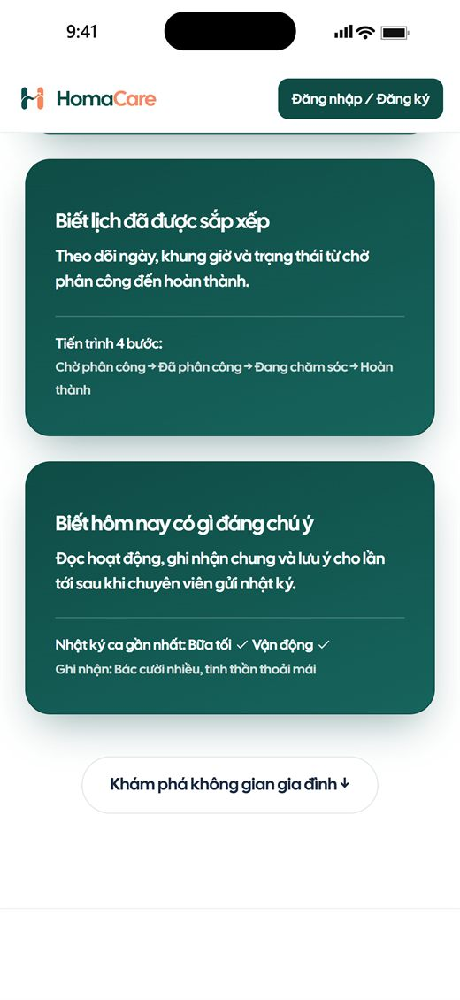
Khu vực “Dõi theo từ xa” (Hình PL.5, PL.6)
Ba thẻ nổi bật trả lời ba câu hỏi người con ở xa quan tâm nhất: ai đang đồng hành, ca diễn ra khi nào, hôm nay có gì đáng chú ý.
1.3 Giới thiệu các tính năng chính
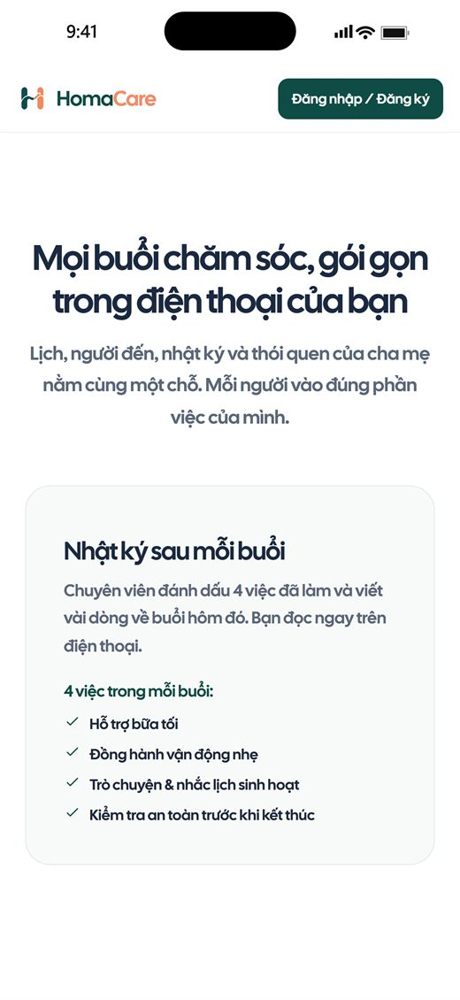
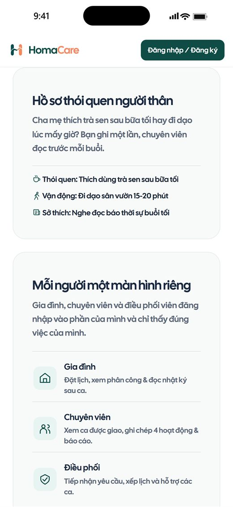
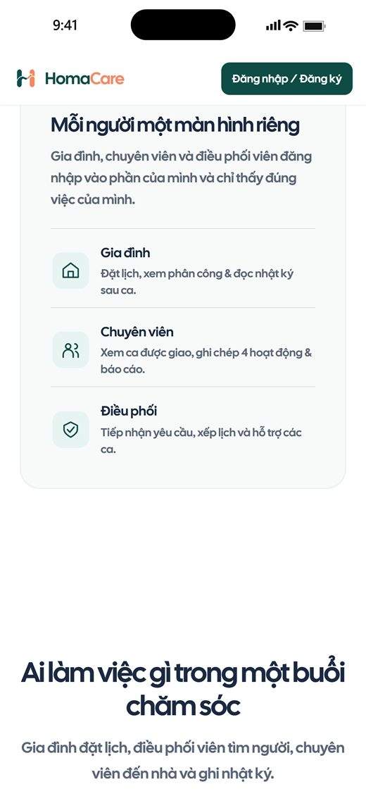
Khu vực giới thiệu tính năng (Hình PL.7, PL.9, PL.8)
Nhật ký sau mỗi buổi, hồ sơ thói quen của người thân và màn hình riêng cho từng vai trò được trình bày gọn trong một khu vực.
2. Hướng dẫn “Cách sử dụng”
2.1 Chạm vào từng bước để xem màn hình minh họa
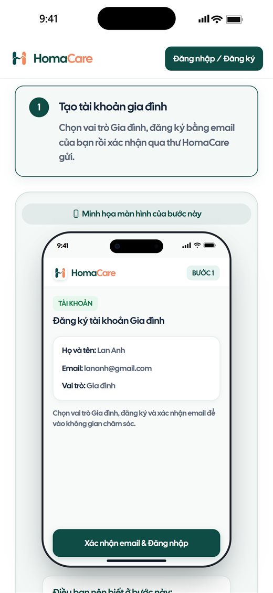
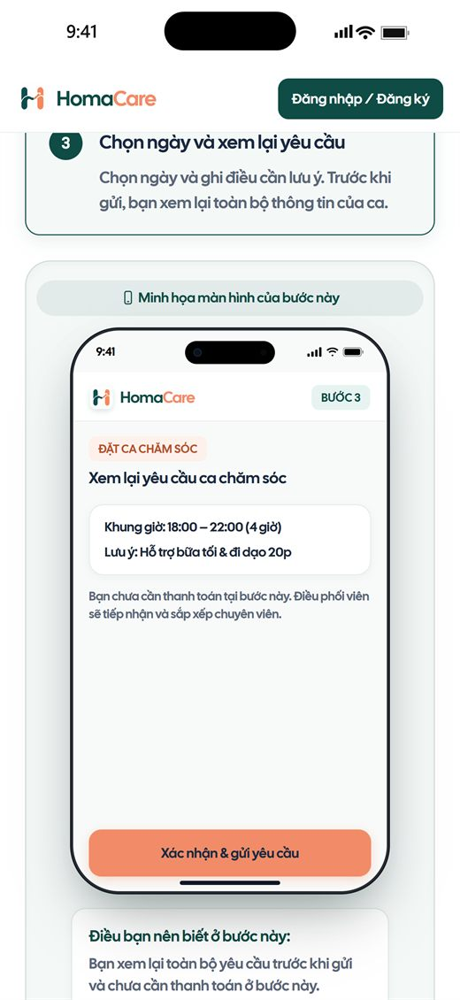
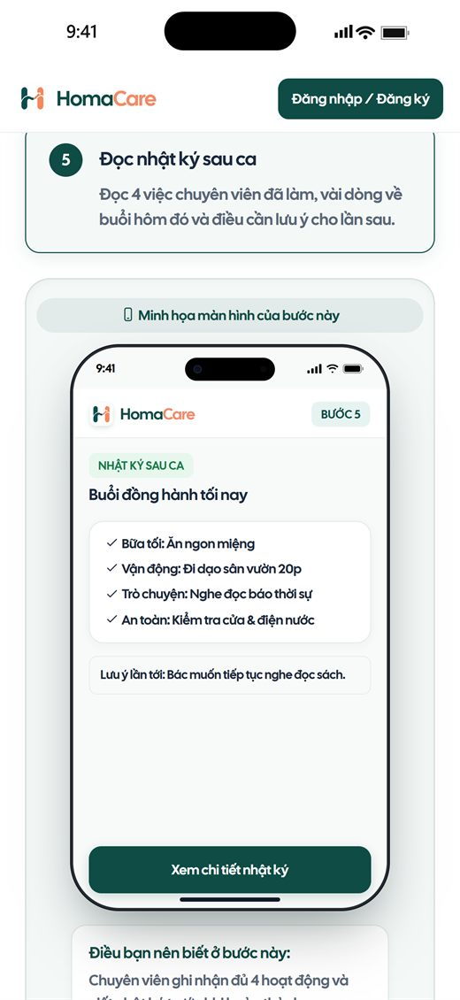
Bước 1 – tạo tài khoản, bước 3 – đặt ca, bước 5 – đọc nhật ký (Hình PL.11, PL.12, PL.13)
Hành trình 6 bước từ tạo tài khoản đến đánh giá ca. Trên điện thoại, chạm vào bước nào thì màn hình minh họa của bước đó mở ngay bên dưới; chạm lại để thu gọn.
3. Giới thiệu dự án và dịch vụ
3.1 Kể câu chuyện và giá trị của HomaCare
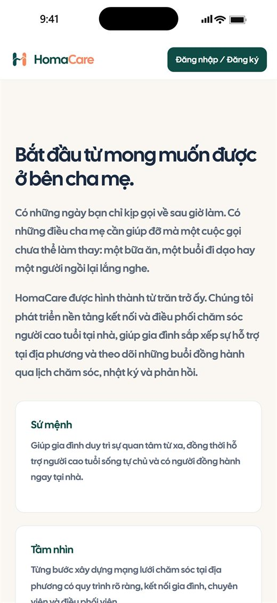
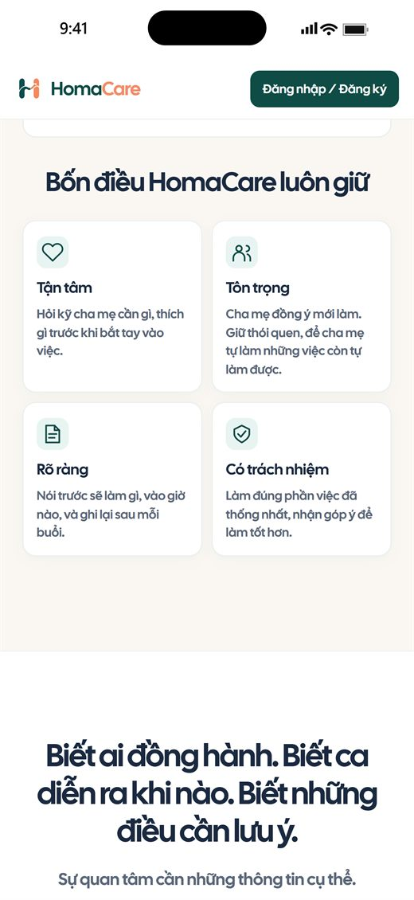
Giới thiệu HomaCare và 4 giá trị cốt lõi (Hình PL.3, PL.4)
Câu chuyện hình thành, sứ mệnh, tầm nhìn và 4 giá trị Tận tâm · Tôn trọng · Rõ ràng · Có trách nhiệm, trình bày dạng lưới 2×2 gọn trên điện thoại.
3.2 Trình bày gói dịch vụ và giải đáp thắc mắc
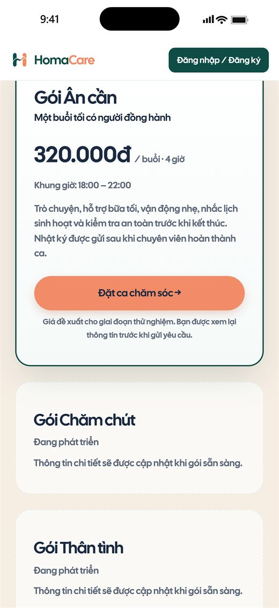
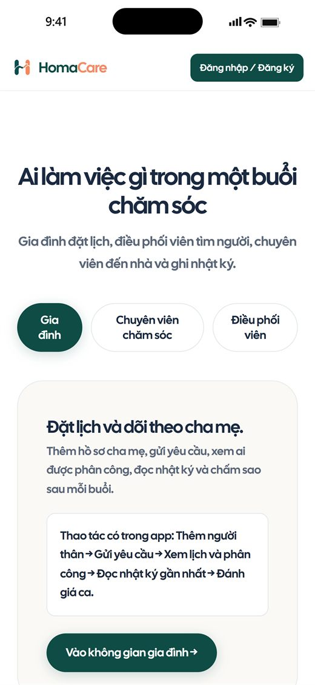
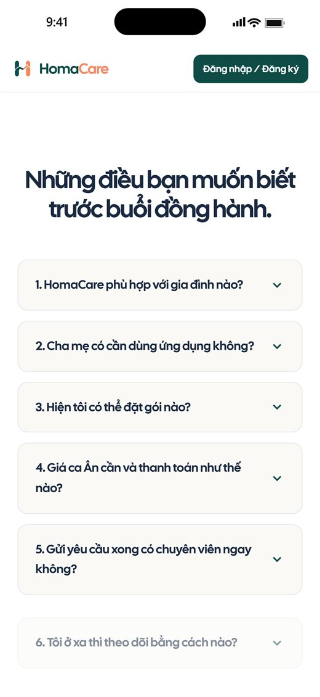
Gói dịch vụ, vai trò và câu hỏi thường gặp (Hình PL.14, PL.15, PL.16)
Gói Ân cần hiển thị đầy đủ nội dung; các gói Chăm chút, Thân tình được đánh dấu Đang phát triển. Phần vai trò giải thích việc của từng bên, và mục hỏi đáp trả lời 9 câu hỏi thường gặp trước buổi đồng hành.
Tính năng cốt lõi theo từng vai trò
1. Không gian gia đình
1.1 Lưu hồ sơ và thói quen của người thân
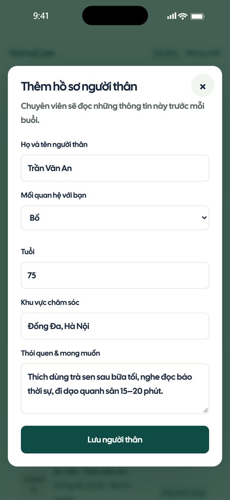
Tổng quan không gian gia đình và biểu mẫu thêm người thân (Hình PL.20, PL.24)
Gia đình tạo hồ sơ cho người thân cần chăm sóc: họ tên, mối quan hệ, tuổi, khu vực. Điểm khác biệt là HomaCare lưu cả thói quen và mong muốn như tách trà sau bữa tối, giờ đi dạo, chương trình yêu thích, để chuyên viên đồng hành đúng nếp sống của từng người.
- Một tài khoản gia đình có thể chăm lo cho nhiều người thân
- Thông tin thói quen hiện cho chuyên viên trước mỗi ca
- Trang tổng quan hiển thị người thân, lịch gần nhất và nút đặt ca
1.2 Đặt ca chăm sóc chỉ trong 2 bước
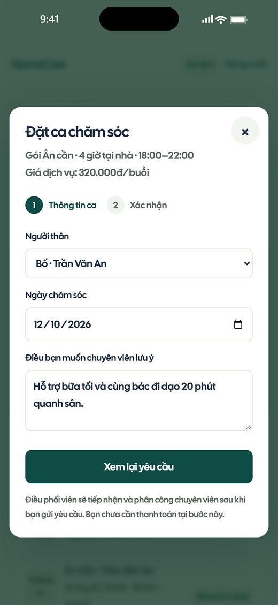
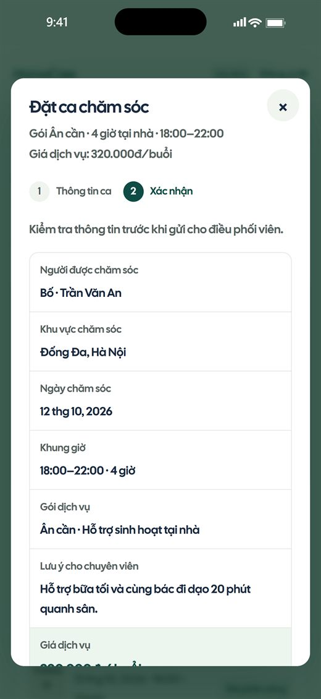
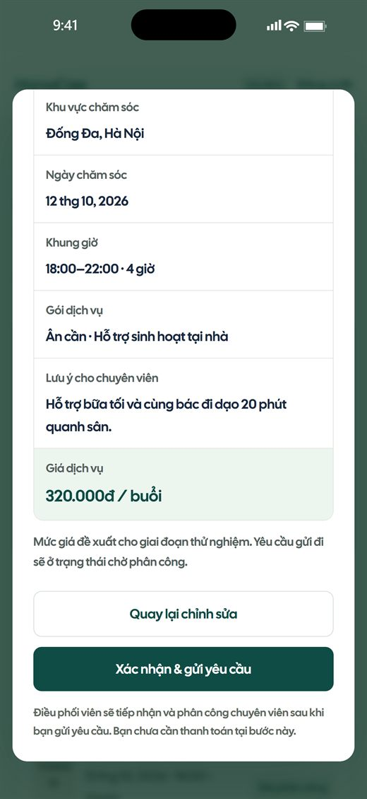
Đặt ca chăm sóc: nhập thông tin, xem lại và xác nhận gửi (Hình PL.25, PL.26, PL.27)
Chọn người thân, ngày chăm sóc và ghi lưu ý cho chuyên viên, sau đó xem lại toàn bộ yêu cầu gồm khu vực, khung giờ 18:00–22:00 và gói dịch vụ trước khi gửi. Gia đình chưa cần thanh toán ở bước này; yêu cầu chuyển sang trạng thái Chờ phân công.
1.3 Theo dõi tiến trình chăm sóc minh bạch
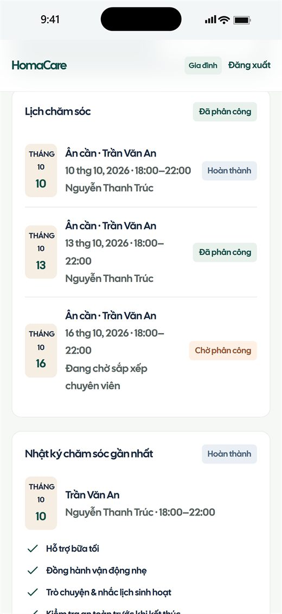
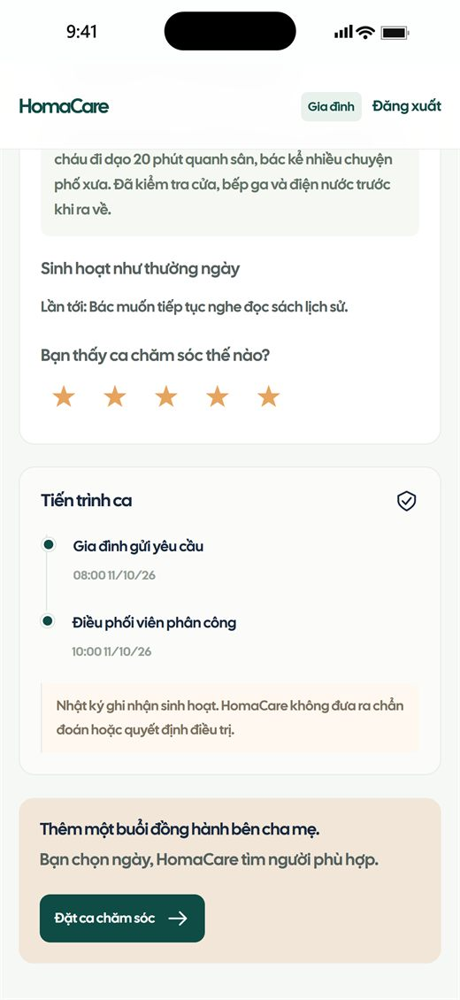
Lịch chăm sóc và tiến trình từng bước của ca (Hình PL.21, PL.23)
Mỗi ca đi qua 4 trạng thái Chờ phân công → Đã phân công → Đang chăm sóc → Hoàn thành. Gia đình thấy ngày, khung giờ, tên chuyên viên được phân công và mốc thời gian của từng bước, bấm Cập nhật để tải thông tin mới nhất.
1.4 Đọc nhật ký và đánh giá sau mỗi buổi
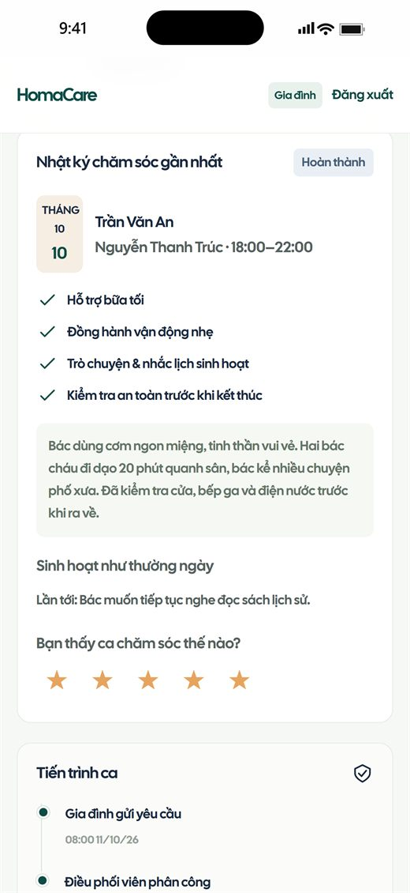
Nhật ký chăm sóc gần nhất và đánh giá ca (Hình PL.22)
Sau buổi chăm sóc, gia đình đọc nhật ký do chuyên viên gửi: 4 hoạt động đã thực hiện, ghi nhận chung, nội dung chi tiết và lưu ý cho lần tới, rồi chấm từ 1 đến 5 sao để HomaCare nâng cao chất lượng đồng hành.
- Người con ở xa biết cụ thể hôm nay bố mẹ ăn uống, vận động, tinh thần ra sao
- Ghi chú rõ phạm vi: nhật ký ghi nhận sinh hoạt, không chẩn đoán y tế
2. Trở thành điều phối viên
2.1 Nắm toàn bộ ca chăm sóc trên một màn hình
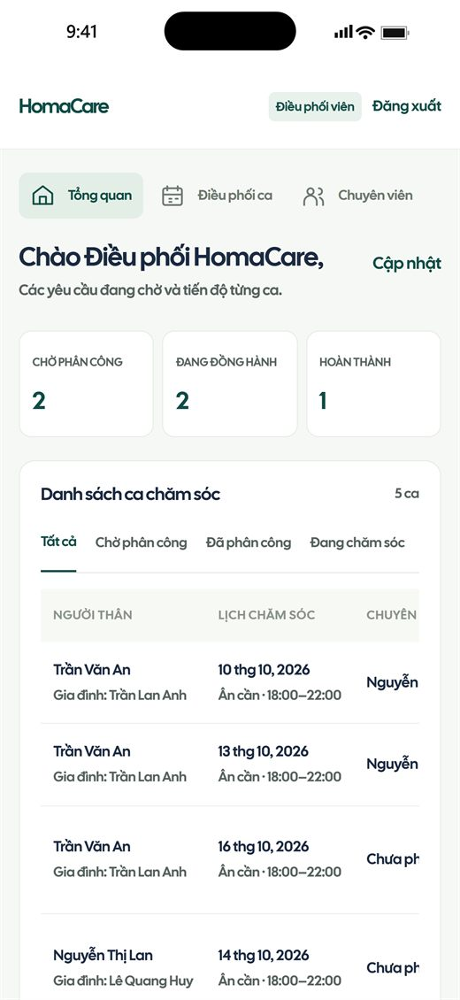
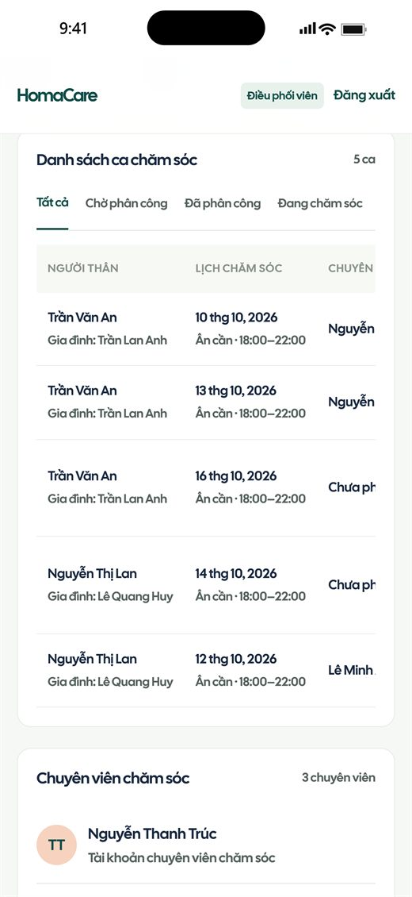
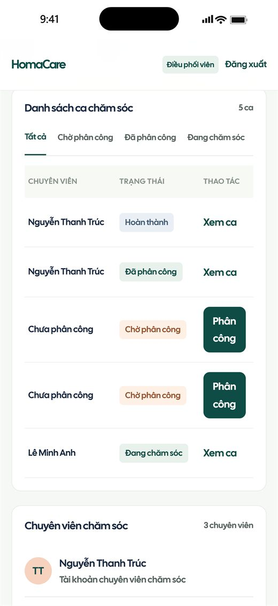
Bảng điều phối: chỉ số tổng quan và danh sách ca (Hình PL.32, PL.33, PL.34)
Điều phối viên theo dõi hoạt động qua 3 chỉ số Chờ phân công, Đang đồng hành, Hoàn thành, cùng danh sách ca kèm người thân, gia đình, lịch, chuyên viên và trạng thái.
2.2 Phân công chuyên viên còn trống lịch
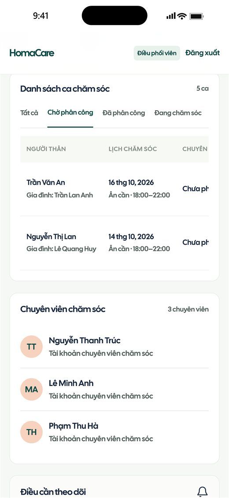
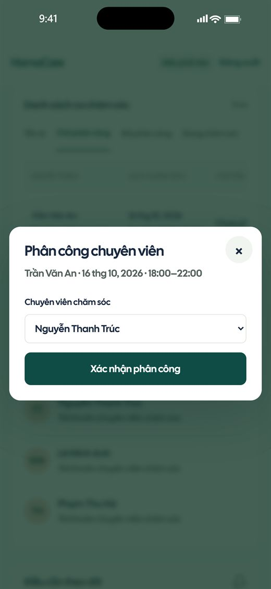
Lọc ca chờ phân công và chọn chuyên viên phù hợp (Hình PL.35, PL.36)
Lọc nhanh các ca đang chờ, bấm Phân công và chọn chuyên viên. Hệ thống chỉ gợi ý những chuyên viên chưa có lịch trong ngày đó, tránh trùng ca. Ngay khi xác nhận, tên chuyên viên xuất hiện bên phía gia đình.
3. Trở thành chuyên viên chăm sóc
3.1 Đọc trước thói quen và lưu ý của gia đình
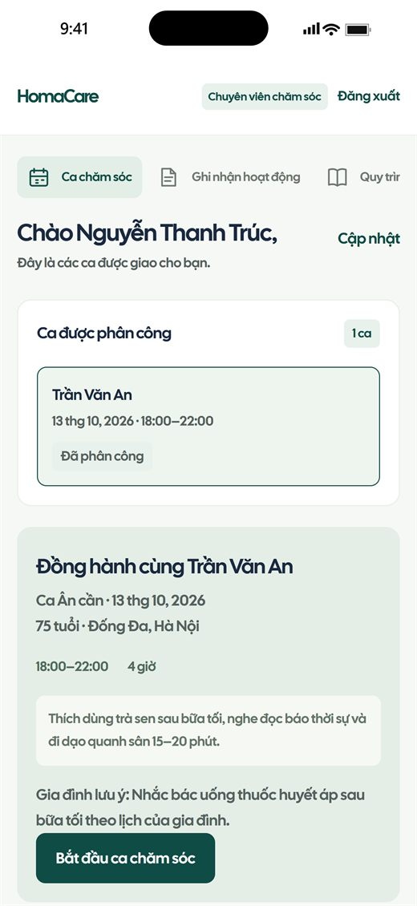
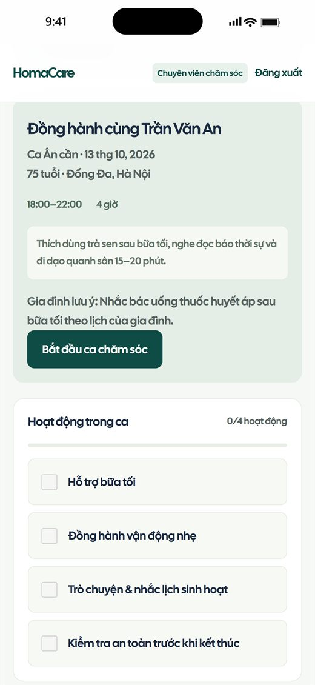
Danh sách ca được giao và chi tiết ca (Hình PL.28, PL.29)
Chuyên viên xem các ca được phân công, đọc trước thói quen của người thân và lưu ý gia đình gửi kèm, rồi bấm Bắt đầu ca chăm sóc khi đến nơi. Gia đình ở xa thấy ngay trạng thái Đang chăm sóc.
3.2 Ghi lại buổi chăm sóc và gửi nhật ký
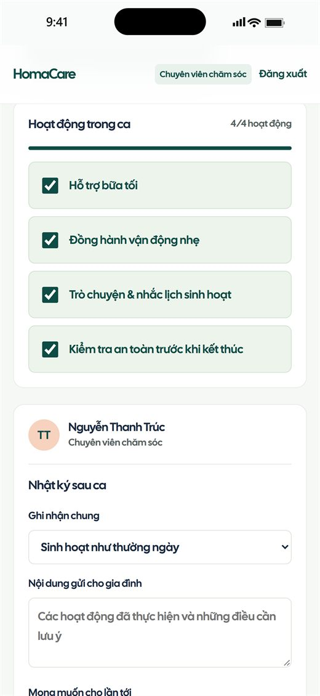
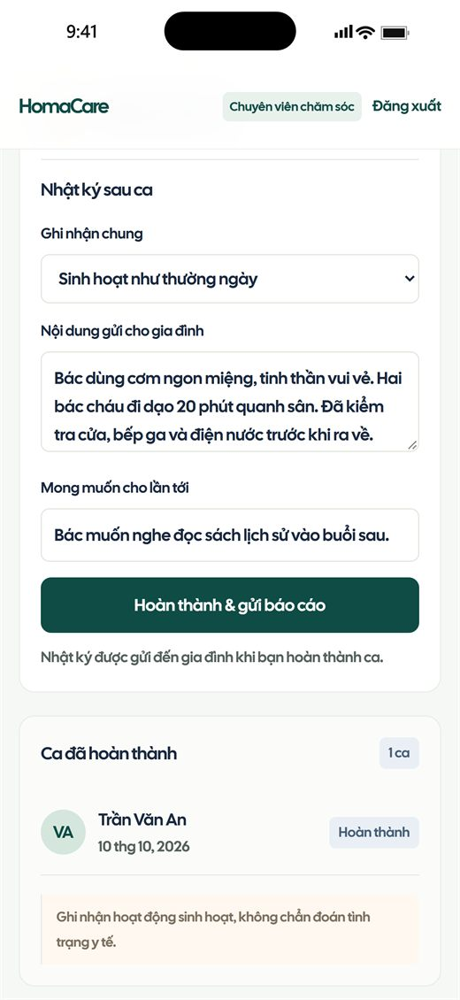
Ghi nhận hoạt động trong ca và nhật ký gửi gia đình (Hình PL.30, PL.31)
Trong ca, chuyên viên đánh dấu 4 hoạt động chuẩn; thanh tiến độ cập nhật theo từng mục. Kết thúc ca, chuyên viên chọn ghi nhận chung, viết nội dung gửi gia đình và mong muốn cho lần tới.
- Hỗ trợ bữa tối
- Đồng hành vận động nhẹ
- Trò chuyện & nhắc lịch sinh hoạt
- Kiểm tra an toàn trước khi kết thúc
- Chỉ gửi được nhật ký khi đã ghi nhận đủ 4 hoạt động
4. Cách tạo tài khoản
4.1 Chọn vai trò rồi đăng ký bằng email
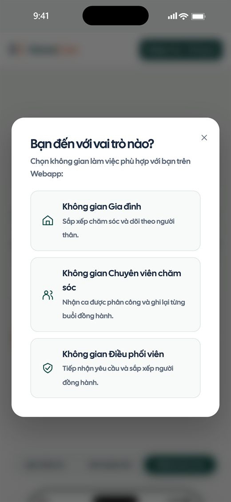
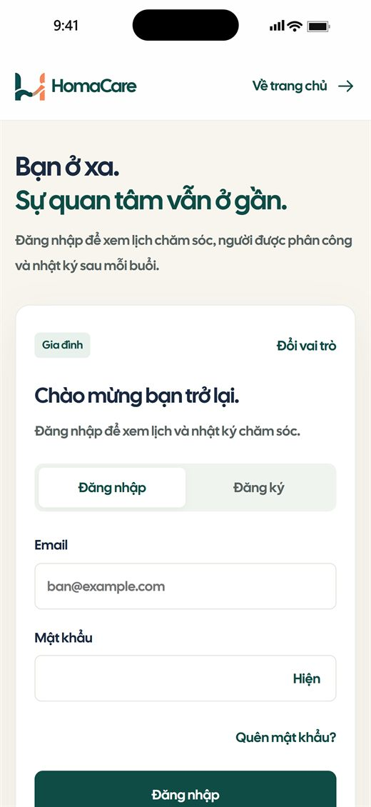
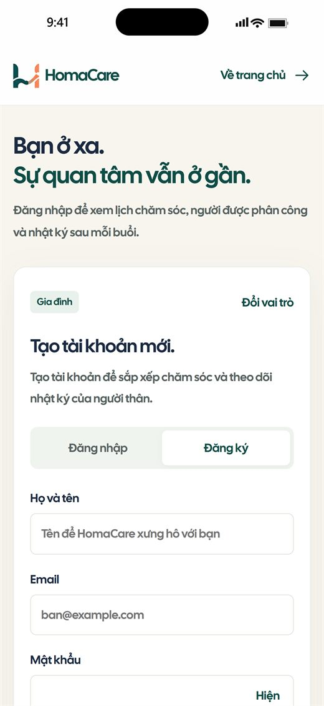
Chọn vai trò, đăng nhập và đăng ký tài khoản (Hình PL.17, PL.18, PL.19)
Người dùng chọn đúng không gian của mình (gia đình, chuyên viên hoặc điều phối viên) rồi đăng ký hoặc đăng nhập bằng email. Gia đình và chuyên viên tự tạo tài khoản; tài khoản điều phối do chủ dự án cấp quyền.
Phạm vi và định hướng tiếp theo
- HomaCare tập trung đồng hành và hỗ trợ sinh hoạt phi y tế; không thay thế khám, điều trị hay phục hồi chức năng chuyên môn.
- Hiện mở đặt gói Ân cần (18:00–22:00, 320.000đ/buổi – giá đề xuất giai đoạn thử nghiệm); gói Chăm chút và Thân tình đang phát triển.
- Chưa có thanh toán trực tuyến, thông báo đẩy và tự đổi/hủy ca trong ứng dụng; thông tin cập nhật khi bấm Cập nhật hoặc tải lại trang.
- Định hướng thử nghiệm tại một khu vực ở Hà Nội, hoàn thiện quy trình tuyển chọn và đào tạo chuyên viên.
Hy vọng những tính năng trên giúp gia đình ở xa yên tâm hơn khi gửi gắm người thân, và giúp chuyên viên, điều phối viên làm việc rõ ràng trong cùng một hệ thống. Gửi trọn quan tâm, vẹn tròn đạo hiếu.
Trải nghiệm HomaCare →Ảnh chụp giao diện điện thoại từ webapp HomaCare; dữ liệu trong ảnh là dữ liệu minh họa.